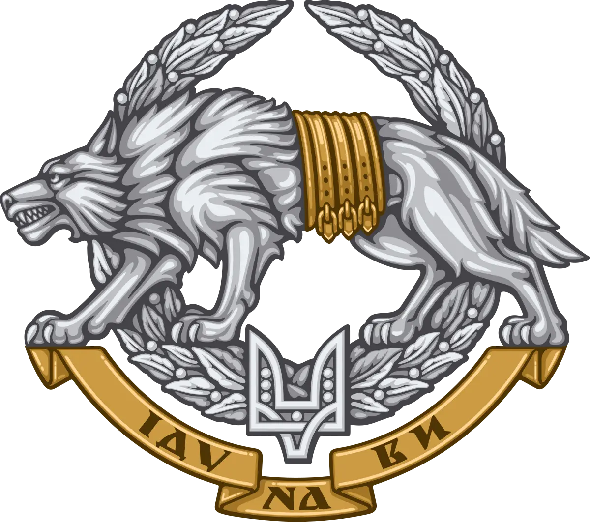

Романовський Ілля
Ілля представляв Хмельницьку область на всеукраїнських змаганнях із кіокушинкай-карате, ставав призером чемпіонату
України.
Народився 23 листопада 2001 року в м. Київ.
Був дуже здібним до навчання – у школі ставав призером районних олімпіад, конкурсів, успішно вчився у музичній школі по
класу акордеона і наполегливо займався спортом.
Закінчивши з відзнакою 9 клас, у 2019 році вступив до Хмельницького політехнічного коледжу на відділення інженерної
механіки за спеціальністю «Галузеве машинобудування».
Сили спеціальних операцій ЗСУ
Спогад про героя
Коли почалося повномасштабне вторгнення, Ілля перейшов на індивідуальний графік навчання, бо хотів захищати свою Батьківщину від загарбників. Він екстерном склав екзамени, захистив диплом і, не дочекавшись випускного, добровольцем вступив до лав Збройних сил України. 26 квітня 2023 року склав присягу на вірність українському народові.
Спортсмен із Хмельницької області у свої 19 років був старшим оператором групи спеціального призначення Сил спеціальних операцій ЗСУ. Але 25 вересня він вступив у свій останній бій поблизу населеного пункту Мала Токмачка Пологівського району.
Загинув 25 вересня 2023 року під час виконання бойового завдання на Запорізькому напрямку
Навіки 19-річний